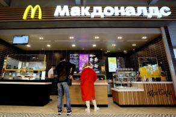
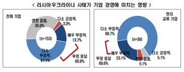
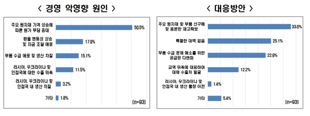

How Companies Affect Social Issues:
Learning from the Ukraine Crisis
Most people assume that global events influence corporations, not vice versa. However, reports indicate that corporations had considerable effects on the developing crisis of Ukraine.
On February 24th, NATO(North Atlantic Treaty Organization) and a large number of other countries exerted economic restrictions on Russia. Interestingly, numerous corporations left Russia voluntarily, unrelated to the sanctions. Some corporations worried about further economic restrictions, while some departed because they were “compelled to act following Russia’s unprovoked invasion of Ukraine, and the unacceptable events that we have witnessed”(Kelly 3). For instance, McDonalds and Accenture withdrew from Russia, and TMF Group refused to work with Russian clients.
Experts seemed surprised at this phenomenon of “self-sanctioning” (Tannebaum 7). These actions of corporations enhanced the economic sanctions against Russia by coercing them to discover new trading partners. In addition, as more businesses withdraw from Russia, the cost of doing business in Russia rises for the remaining companies. This is because it becomes harder for them to find necessary goods and services as the corporations that produce those leave from Russia.

This situation poses fundamental questions. Is it appropriate for corporations to be part of the war? How should people consider companies influencing global affairs? Should the business sector be separate from the political sector? Whatever these answers may be, it is clear that the Ukraine crisis proved the power of corporations. Companies have become global actors with immense capital and the grave economic influence that comes with it.
The Ukraine crisis poses important thought points about the roles of companies. Now, it is our job to realize the role of corporations in global society and discuss their sphere of influence.
[작성자: 경영팀 한혜민]
러시아 제재 강화로 국내 중소기업 상당수 피해,
주요 원인은 ‘원자재 수급 문제’
2022년 2월 24일 러시아-우크라이나 전쟁의 현실화로 국제 주요 원자재 수급이 어려워지고 있다. 러시아는 원자재 수출이 경제에서 많은 비중을 차지하는 국가로, 글로벌 주요 원자재를 공급하는 국가이기에 이번 러시아-우크라이나 전쟁으로 원자재 대부분의 가격이 폭등하고 있는 상황이다. 특히 한국의 대러시아 전체 수입의 약 25.3%를 차지하는 ‘나프타’(플라스틱과 섬유 원료로 사용됨)의 경우, 유가 상승으로 14년여 만에 가격 최고치에 이르렀다.
이러한 주요 원자재 수급 및 가격 폭등 문제로 국내 기업들도 많은 피해를 받고 있다. 특히 러시아나 우크라이나와 협업을 하던 국내 중소기업이나, 러시아의 원자재 수입으로 전반적인 경영활동이 이루어지던 국내 제조업체들은 매출 및 생산에서 직접적인 타격을 받았다. 전국경제인연합회가 시장조사 전문기관에 의뢰해 제조기업 153개사를 대상으로 ‘러시아-우크라이나 사태가 기업 경영에 미친 영향’에 대해 조사한 결과에 따르면, 응답 기업 중 약 60%가 이번 사태가 기업 경영에 부정적 영향을 미쳤다고 하였고, 이러한 부정적 영향의 원인으로는 약 50%가 ‘주요 원자재 가격 상승에 따른 원가 부담 증대’라고 응답하였다.

특히 이번 사태로 인한 원자재 단가 상승은 비용 인플레이션을 발생시켜 물가 상승으로 이어질 가능성이 높기 때문에, 이를 방지하기 위한 정부의 개입과 지원이 필수적일 것으로 보인다.
이에 따라 현재 정부는 러시아-우크라이나 사태에 대한 비상 대응책을 마련중이다. 산업통상자원부는 한국광해광업공단이 지분을 소유한 해외광산 15곳 중 2곳을 매각을 선회하여 자원 확보를 해 원자재 가격 폭등 현상을 어느 정도 상쇄하기 위한 방향으로 검토하고 있다. 또한 러시아의 우크라이나 침공사태와 관련해 2월 25일 산업부는 실시간 상황을 점검하고 수출기업의 무역을 지원하는 ‘무역안보반’을 새로 구성하였고, ‘러시아-우크라이나 사태 관련 무역안보반 1차 회의 및 수출통제 설명회’를 개최하였다. 국내 중소벤처기업부는 3월 7일 ‘중소기업 분야 비상대응 TF 회의’를 개최하여 긴급경영안정자금을 수출기업 당 최대 10억씩 지원하는 등의 손해보상정책을 마련하였다. 하지만 두 회의에서 모두 국내 수출기업에 보다 초점을 두었기에 수출기업에 대한 대책은 어느정도 마련된 것으로 보이나, 반대로 러시아로부터 원자재를 수입해 기업 경영을 하는 제조업체에 대한 지원정책은 추가적인 회의가 필요할 것으로 보인다.
[작성자: 경영팀 허은수]